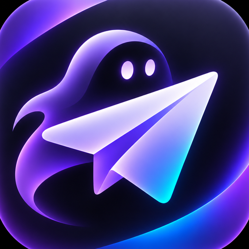

Установить AstraGram
Нажмите кнопку — откроется AltStore и предложит добавить источник AstraGram. Обновления потом будут приходить туда же.
📥 Открыть в AltStore Открыть в SideStore 📦 Скачать IPAЕсли кнопка не сработала
- Откройте AltStore → Browse → Sources → +.
- Вставьте скопированный адрес.
- Найдите AstraGram и нажмите Free.
Нужен iPhone с iOS 15 или новее и установленный AltStore. AstraGram — неофициальный клиент Telegram с открытым кодом: github.com/dedsec-reth0/astragram.